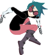

|  |
Build your own 2D Game Engine, Second EditionThe following are the source code to the examples of the book: NEED TO UPDATEBuild your own 2D Game Engine and Create Great Web Games using HTML5, JavaScript, and WebGL. Click on the links to run the corresponding exmples. It is recommended that you run the following examples with a Google Chrome Web Browser. |